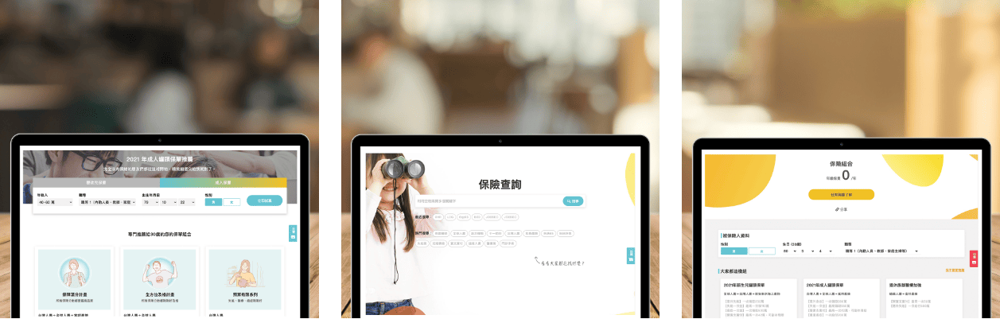

買保險 - 改變當前的銷售模式
Fintech 近幾年蓬勃發展，從銀行證券到保險，越來越多金融產品數位化，現在市面上幾個大型的保險資訊平台網站，買保險可以說佔了其中一個重要的席次。
在使用者與口碑增加之後，買保險開始思考如何讓自己能夠在業務的銷售流程中獲得重要的地位，我加入專案時正是開始從零規劃的時候。
為遵守保密協議，某些數據會被省略或隱藏

項目範圍
我負責買保險網站製作保險搜尋工具、推薦功能的整體規劃。
我的角色
我與另外一位設計師、三位工程師、一位企劃與 PM 開始合作，在開發中負責體驗策略與後續規劃、從中協調技術人員們與 PM 的合作。
目標-業務為本的銷售流程
這網站大部分的使用者都來自於一般民眾，而買保險這次的計畫是創造一個專門給業務使用的區域，現在很多業務都人手一個 Pad 或著隨身電腦，他需要整合目前市面上可以資訊化的商品，讓業務不再到處去各家公司搜集資訊。
三大工具規劃
- 保險推薦 - 主要為民眾面向，推薦網站上已經組好的保單組合。
- 保險查詢 - 可搜尋目前網站上所有歸檔在案的保單。
- 保險組合器 - 主要為業務面向，以自由組合保單功能為賣點。
三個工具互通有無，最終會因應業務的銷售流程串連這三個工具的所有內容。
三大工具的基本流程圖
主要能讓三大工具的最後流程能夠互相通達，最後到我們希望的目的地：留單。